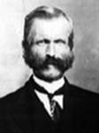
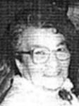

fiche familiale
******************************************************************************
|   |
Louis-Firmin Provost décède à l'âge de 78 ans. Naissance le 18 février 1850 à St-Vital de Lampton, cté Frontenac. Dit "Firmin". Parrain son oncle Élisée Provost, marraine sa tante Sophie Ruel. Décès le 4 janvier 1929 à St-Émile de Légal, Alb. Ils allèrent demeurer à Ste-Rose de Watford où ils se fixèrent dans le rang de l'église. Il fût l'un des premiers colons de la paroisse et aussi propriétaire d'un moulin à scie, il y résida pendant 39 ans. Le 24 août 1917 ils allèrent résider à St-Émilie de Légal en Alberta. Il y décéda chez son fils Roméo. Père: Lévis-Louis Provost Mère: Rose-Délima Guillemette (sa famille) Mariage le 19 juillet 1876 à St-Gervais de Bellechasse. Épouse:Marie-Apolline Nolin décède à l'âge de 82 ans. Naissance 10 avril 1850 à St-Gervais, cté Bellechasse. Décès le 23 décembre 1932 à Picardville, Alb. Dite "Marie" Père: Joseph Nolin Mère: Caroline Fournier (sa famille) |
Enfant 1 Georges Provost
décède à l'âge de 3 ans.
Naissance le 28 mai 1877 à St-Gervais de Bellechasse.
Décès en oct 1880 à Ste-Rose-de-Watford, cté Dorchester
Parrain et marraine ses grands parents paternel,
Lévis-Louis Provost et Rose-Délima Guillemette.
-------------------------------------------------------------------------------
Enfant 2 Eva Provost
décède à l'âge de 17 ans.
Naissance le 6 décembre 1878 à St-Gervais, cté Bellechasse
Décès en 1896 à Ste-Rose de Watford, cté Dorchester
Parrain et marraine ses grands parents maternel,
Joseph-François Nolin et Caroline Fournier.
-------------------------------------------------------------------------------
| |
Enfant 3 Lorenzo Provost décède à l'âge de 84 ans. Naissance le 6 novembre 1880 à Ste-Rose de Watford, cté Dorchester Baptême: à Ste-Germaine-Station, cté Dorchester Parrain son oncle Mizaël Nolin, marraine sa tante Zorila Nolin. Décès le 31 octobre 1965 à Edmonton, AB En 1913 il va demeurer à Scoby au Montana USA et en 1920 alla s'établir à Legal en Alberta sur une ferme à blé et en 1940 alla demeurer à Vancouvert chez sa fille Rose-Alma pour tavailler dans un moulin à scie et en octobre 1954 il alla demeurer à Edmonton chez sa fille Zorilla. Mariage le 16 juillet 1901 à Ste-Rose de Watford, cté Dorchester Conjointe: Marie-Félixine Doyon n. en 1884 d. 7 juin 1936. Père: Léon Doyon Mère: Marie Rodrigue Ils eurent 8 enfants, 3 gas et 5 filles. |
  |
Enfant 4 Adalbert Provost décède à l'âge de 77 ans. Naissance le 26 février 1882 à Ste-Rose de Watford, cté Dorchester Baptême: à Ste-Germaine-Station, cté Dorchester Parrain Pierre Turcotte son oncle, marraine sa tante Marie Provost. Décès le 20 janvier 1960 à Légal, Alb. Sépulture le 22 janvier 1960 à Légal, Alb. Le 7 avril 1918 il va s'établir à Legal en Alberta sur une grande ferme à blé qu'il exploita jusqu'en 1950 pour se retirer vivre au village de Legal. Parrain de Mary Henri. Mariage le 30 août 1904 à Ste-Germaine-Station, cté Dorchester Conjointe: Rose-Aimée L'Heureux n. 14 février 1888 d. 10 juin 1956. Marraine de Mary Henry. Père: Damase L'Heureux Mère: Delphine Gourgues Ils n'eurent pas d'enfants. |
| |
Enfant 5 Graziella Provost décède à l'âge de 90 ans. Naissance le 26 avril 1883 à Ste-Germaine-Station, cté Dorchester Décès le 12 avril 1974 à Rouyn-Noranda, cté Témiscamingue (ses ancêtres) Mariage le 16 juillet 1901 à Ste-Rose de Watford, cté Dorchester Conjoint: Eugène Henri n. 14 avril 1877 d. 29 mars 1960. (sa famille) |
  |
Enfant 6 Imelda Provost décède à l'âge de 34 ans. Naissance le 5 janvier 1885 à Ste-Rose de Watford, cté Dorchester Parrain son oncle Joseph Cadorette, marraine sa tante Valéda Nolin. Décès le 25 janvier 1919 à Ste-Rose de Watford. Mariage le 6 juillet 1908 à Ste-Rose de Watford. Conjoint: Arthur Binet n. en 1881 d. 1er janvier 1945. Père: Achille Binet Mère: Marie Goulet |
| |
Enfant 7 Marie-Lucia Provost décède à l'âge de 25 ans. Naissance le 27 mars 1888 à Ste-Rose de Watford, cté Dorchester Parrain son oncle Évangéliste Turcotte, marraine sa tante Délima Provost. Décès le 26 janvier 1914 à Ste-Rose de Watford. Funérailles: 29 janvier 1914 à Ste-Rose de Ste-Rose-de-Watford Morte accidentellement, brûlée vivante dans l'incendie de la maison paternelle dont elle fût probablement la cause involontaire. |
|  |
Enfant 8 Roméo Provost décède à l'âge de 73 ans. Naissance le 11 juillet 1889 à St-Gervais, cté Bellechasse Parrain Damasse Turgeon un ami de la famille, marraine sa tante Malvina Provost. Décès le 6 février 1963 à Picardville, Alb. Producteur de blé. Les années qu'il a vécu à Ste-Rose, il travaillait au moulin de son père. Le 7 avril 1918, il vendit sa propriété et parti pour aller rejoindre ses parents à St-Émile de Légal, Alberta où il s'installa sur une ferme à blé. En février 1931 il vendit sa terre et alla s'installer à Picardville y amenant sa mère. Mariage le 20 octobre 1914 à St-Edouard de Frampton, cté Dorchester 1ière conjointe: Rose-Anna Nadeau n. en mars 1896 d. 16 avril 1920. Père: Joseph Nadeau Mère: Eugénie L'Abbé Ils eurent 3 enfants, une fille et deux gas. Mariage le 6 août 1928 à Légal, Alb. 2ième conjointe: Victoria-Marie Ringuette n. 10 mai 1909 d. 8 mars 1993. Père: Elie Ringuette Mère: Evelyne Beaulieu Ils eurent 12 enfants, 7 filles et 5 gas. |